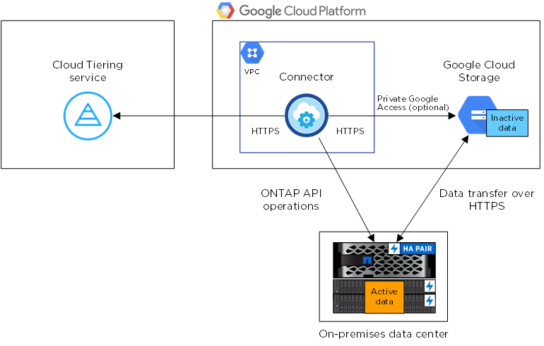

문서 변경 요청
문서 변경 요청 이 페이지 편집
이 페이지 편집 기여하는 방법 자세히 알아보기
기여하는 방법 자세히 알아보기사내 ONTAP 클러스터에서 Google 클라우드 스토리지로 데이터 계층화
비활성 데이터를 Google 클라우드 스토리지로 계층화하여 온프레미스 ONTAP 클러스터의 여유 공간을 확보
빠른 시작
다음 단계를 따라 빠르게 시작하거나 나머지 섹션을 아래로 스크롤하여 자세한 내용을 확인하십시오.
다음이 필요합니다.
-
ONTAP 9.6 이상을 실행하고 Google 클라우드 스토리지에 HTTPS로 연결된 온프레미스 ONTAP 클러스터 "클러스터를 검색하는 방법에 대해 알아보십시오".
-
사전 정의된 스토리지 관리자 역할 및 스토리지 액세스 키가 있는 서비스 계정입니다.
-
Google Cloud Platform VPC에 설치된 커넥터
-
데이터 센터의 ONTAP 클러스터, Google 클라우드 스토리지 및 Cloud Tiering 서비스에 대한 아웃바운드 HTTPS 연결을 지원하는 커넥터용 네트워킹.
Cloud Manager에서 사내 작업 환경을 선택하고, 계층화 서비스에 대해 * Enable * 을 클릭하고, 표시되는 메시지에 따라 데이터를 Google Cloud Storage에 계층화합니다.
무료 평가판을 사용 종료한 후에는 사용한 만큼만 지불하는 가입형, ONTAP Cloud Tiering 라이센스 또는 다음 두 가지를 결합하여 Cloud Tiering에 대해 결제하십시오.
-
GCP 마켓플레이스를 구독하려면 "Cloud Manager Marketplace 오퍼링으로 이동합니다"를 클릭하고 * 가입 * 을 클릭한 다음 화면의 지시를 따릅니다.
-
Cloud Tiering BYOL 라이센스를 사용하여 비용을 지불하려면 mailto:ng-cloud-tiering@netapp.com?subject=Licensing [구매해야 하는 경우 문의하기]를 참조하십시오 "Cloud Manager Digital Wallet에서 계정에 추가하십시오".
요구 사항
ONTAP 클러스터에 대한 지원을 확인하고, 네트워킹을 설정하고, 오브젝트 스토리지를 준비합니다.
다음 이미지는 각 구성 요소와 이러한 구성 요소 간에 준비해야 하는 연결을 보여 줍니다.


|
Connector와 Google Cloud Storage 간의 통신은 오브젝트 스토리지 설정만을 위한 것입니다. |
ONTAP 클러스터 준비
데이터를 Google 클라우드 스토리지로 계층화할 때 ONTAP 클러스터는 다음 요구사항을 충족해야 합니다.
- 지원되는 ONTAP 플랫폼
-
-
ONTAP 9.8 이상을 사용하는 경우 AFF 시스템 또는 All-SSD 애그리게이트 또는 All-HDD 애그리게이트를 포함한 FAS 시스템의 데이터를 계층화할 수 있습니다.
-
ONTAP 9.7 이하 버전을 사용하는 경우: AFF 시스템 또는 All-SSD 애그리게이트를 사용하는 FAS 시스템의 데이터를 계층화할 수 있습니다.
-
- 지원되는 ONTAP 버전
-
ONTAP 9.6 이상
- 클러스터 네트워킹 요구 사항
-
-
ONTAP 클러스터는 포트 443을 통해 Google 클라우드 스토리지에 HTTPS 연결을 시작합니다.
ONTAP는 오브젝트 스토리지 간에 데이터를 읽고 씁니다. 오브젝트 스토리지는 한 번도 시작되고, 응답 하기만 합니다.
Google Cloud Interconnect는 더 나은 성능을 제공하고 데이터 전송 비용을 낮추지만 ONTAP 클러스터와 Google Cloud 스토리지 간에는 필요하지 않습니다. 그러나 이것이 권장 모범 사례입니다.
-
Google Cloud Platform VPC에 있는 Connector에서 인바운드 연결이 필요합니다.
클러스터와 Cloud Tiering 서비스를 연결할 필요가 없습니다.
-
계층화할 볼륨을 호스팅하는 각 ONTAP 노드에 인터클러스터 LIF가 필요합니다. LIF는 ONTAP가 오브젝트 스토리지에 연결하는 데 사용해야 하는 _IPspace_와 연결되어 있어야 합니다.
-
- 지원되는 볼륨 및 애그리게이트
-
Cloud Tiering이 계층화할 수 있는 총 볼륨 수가 ONTAP 시스템의 볼륨 수보다 적을 수 있습니다. 이는 볼륨을 일부 애그리게이트로 계층화할 수 없기 때문입니다. 에 대한 ONTAP 설명서를 참조하십시오 "FabricPool에서 지원하지 않는 기능 또는 기능입니다".
|
|
Cloud Tiering은 FlexGroup 볼륨을 지원합니다. 설치 프로그램은 다른 볼륨과 동일하게 작동합니다. |
ONTAP 클러스터 검색
콜드 데이터의 계층화를 시작하려면 Cloud Manager에서 온프레미스 ONTAP 작업 환경을 만들어야 합니다.
커넥터 작성 또는 전환
데이터를 클라우드에 계층화하려면 Connector가 필요합니다. 데이터를 Google 클라우드 스토리지로 계층화할 때 Google Cloud Platform VPC에서 Connector를 사용할 수 있어야 합니다. 새 커넥터를 만들거나 현재 선택한 커넥터가 GCP에 있는지 확인해야 합니다.
커넥터를 위한 네트워킹 준비
커넥터에 필요한 네트워크 연결이 있는지 확인합니다.
-
커넥터가 설치된 VPC에서 다음 연결을 사용할 수 있는지 확인합니다.
-
포트 443(HTTPS)을 통해 Cloud Tiering 서비스에 대한 아웃바운드 인터넷 연결
-
포트 443을 통해 Google Cloud Storage에 HTTPS로 연결합니다
-
포트 443을 통해 ONTAP 클러스터 관리 LIF에 HTTPS로 연결합니다
-
-
선택 사항: 커넥터를 배포할 서브넷에서 개인 Google 액세스를 활성화합니다.
"개인 Google 액세스" ONTAP 클러스터에서 VPC로 직접 연결하고 커넥터 및 Google 클라우드 스토리지 간의 통신을 가상 프라이빗 네트워크에 유지하고자 하는 경우 이 기능을 사용하는 것이 좋습니다. Private Google Access는 내부(전용) IP 주소(외부 IP 주소 없음)만 있는 VM 인스턴스와 작동합니다.
Google Cloud Storage 준비 중
계층화를 설정할 때는 스토리지 관리자 권한이 있는 서비스 계정에 대한 스토리지 액세스 키를 제공해야 합니다. 서비스 계정을 사용하면 Cloud Tiering에서 데이터 계층화에 사용되는 Cloud Storage 버킷을 인증하고 액세스할 수 있습니다. Google Cloud Storage가 누가 요청을 하는지 알 수 있도록 키가 필요합니다.
클라우드 스토리지 버킷은 에 포함되어야 합니다 "Cloud Tiering을 지원하는 지역".
|
|
특정 일 수 이후에 계층형 데이터가 전환될 저비용 스토리지 클래스를 사용하도록 Cloud Tiering을 구성하려면 GCP 계정에서 버킷을 설정할 때 라이프사이클 규칙을 선택하지 않아야 합니다. Cloud Tiering은 라이프사이클 전환을 관리합니다. |
-
로 이동합니다 "GCP 스토리지 설정" 서비스 계정에 대한 액세스 키를 생성합니다.
-
프로젝트를 선택하고 * 상호 운용성 * 을 클릭합니다. 아직 수행하지 않았다면 * 상호 운용성 액세스 사용 * 을 클릭하십시오.
-
서비스 계정의 액세스 키 * 에서 * 서비스 계정의 키 생성 * 을 클릭하고 방금 생성한 서비스 계정을 선택한 다음 * 키 생성 * 을 클릭합니다.
Cloud Tiering을 설정할 때 나중에 키를 입력해야 합니다.
-
첫 번째 클러스터에서 Google Cloud 스토리지로 비활성 데이터 계층화
Google Cloud 환경을 준비한 후 첫 번째 클러스터에서 비활성 데이터의 계층화를 시작합니다.
-
스토리지 관리자 역할이 있는 서비스 계정의 스토리지 액세스 키입니다.
-
온프레미스 클러스터를 선택합니다.
-
계층화 서비스에 대해 * 활성화 * 를 클릭합니다.

-
Tiering Setup * 페이지의 단계를 완료합니다.
-
* 버킷 *: 새 Google Cloud Storage 버킷을 추가하거나 기존 버킷을 선택합니다.
-
* Storage Class Life Cycle *: Cloud Tiering은 계층화된 데이터의 라이프사이클 전환을 관리합니다. 데이터는 _Standard_class에서 시작되지만, 특정 일 수가 지나면 데이터를 다른 클래스로 이동하는 규칙을 만들 수 있습니다.
계층화된 데이터를 전환할 Google Cloud 스토리지 클래스를 선택하고 데이터가 이동될 때까지 남은 일 수를 선택한 다음 * 계속 * 을 클릭합니다. 예를 들어, 아래 스크린샷은 오브젝트 저장소에서 30일 후에 계층형 데이터가 _Standard_class에서 _Nearline_class로 이동한 다음 오브젝트 저장소에서 60일 후에 _Coldline_class로 이동함을 보여 줍니다.
이 스토리지 클래스에 데이터 보존 * 을 선택하면 해당 스토리지 클래스에 데이터가 유지됩니다. "지원되는 스토리지 클래스를 참조하십시오".

수명 주기 규칙은 선택한 버킷의 모든 오브젝트에 적용됩니다.
-
* 자격 증명 *: 스토리지 관리자 역할이 있는 서비스 계정의 스토리지 액세스 키와 암호 키를 입력합니다.
-
* 클러스터 네트워크 *: ONTAP가 오브젝트 스토리지에 연결하는 데 사용해야 하는 IPspace를 선택합니다.
올바른 IPspace를 선택하면 클라우드 계층화를 통해 ONTAP에서 클라우드 공급자의 오브젝트 스토리지로의 연결을 설정할 수 있습니다.
-
-
계층화할 볼륨을 선택하려면 * 계속 * 을 클릭합니다.
-
Tier Volumes_ 페이지에서 계층화를 구성할 볼륨을 선택하고 계층화 정책 페이지를 시작합니다.
-
모든 볼륨을 선택하려면 제목 행(
 )를 클릭하고 * 볼륨 구성 * 을 클릭합니다.
)를 클릭하고 * 볼륨 구성 * 을 클릭합니다. -
여러 볼륨을 선택하려면 각 볼륨에 대한 확인란을 선택합니다(
 )를 클릭하고 * 볼륨 구성 * 을 클릭합니다.
)를 클릭하고 * 볼륨 구성 * 을 클릭합니다. -
단일 볼륨을 선택하려면 행(또는)을 클릭합니다
 아이콘)을 클릭합니다.
아이콘)을 클릭합니다.
-
-
Tiering Policy_대화 상자에서 계층화 정책을 선택하고 선택한 볼륨의 냉각 날짜를 필요에 따라 조정한 다음 * Apply * 를 클릭합니다.

클러스터의 볼륨에서 Google Cloud 오브젝트 스토리지로 데이터 계층화를 성공적으로 설정했습니다.
또한 클러스터를 추가하거나 클러스터에서 활성 데이터와 비활성 데이터에 대한 정보를 검토할 수 있습니다. 자세한 내용은 을 참조하십시오 "클러스터에서 데이터 계층화 관리".